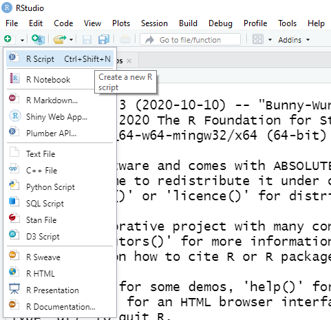
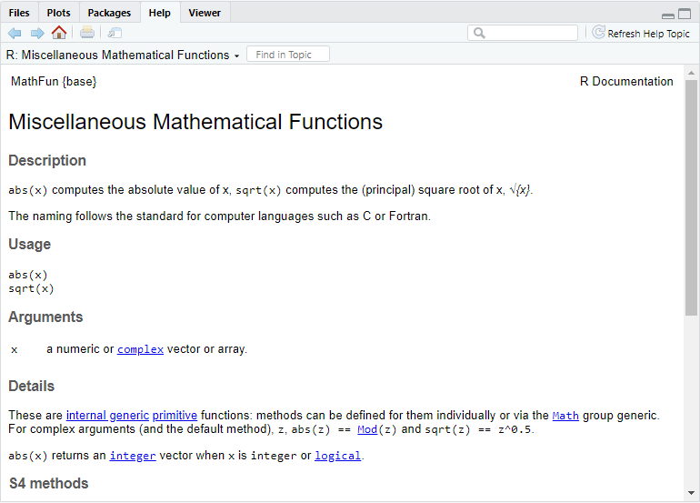
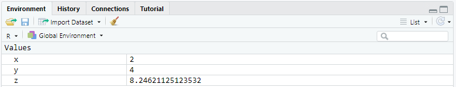
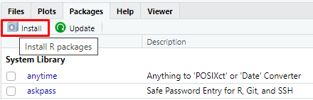
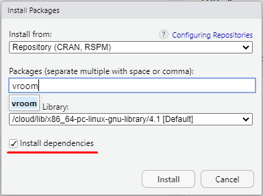

[1] 4[1] 3[1] 15[1] 5[1] 27[1] 2[1] 3Прогнозування часових рядів
Ігор Мірошниченко
КНЕУ::ІІТЕ
оновлено: 2022-09-06
Після встановлення R та RStudio, на робочому столі у вас буде дві іконки:
- це для самої мови програмування
- це для IDE
Як правило код пишуть у скрипті (такий собі аналог текстового редактора), тож для його створення необхідно натиснути зелений хрестик в лівому верхньому куті та обрати пункт R Script або натиснути комбінацію клавіш Ctrl+Shift+N:
Для додавання коментарів використовується знак решітки або, як його ще називають, дієз — #. Все, що написано у рядку після # ігнорується R:
Якщо необхідно “закоментувати” частину коду, тобто поставити # на початку кожного рядка, то для цього є комбінація клавіш Ctrl + Shift + C.
Не забувайте правильно розставляти дужки:
Але на мою думку, найшвидший варіант — це написати функцію і натиснути клавішу F1 на клавіатурі.
В R це робиться за допомогою символів <-. Для швидкого написання існує зручна комбінація клавіш Alt + -.
Ліворуч від символу <- записується назва майбутньої змінної. Праворуч — значення або вираз, яке необхідно зберегти в цю змінну.
Для присвоювання можна використовувати і знак = але серед спільноти користувачів R це не прийнято.
Слід звернути увагу, що при присвоюванні результат розрахунку не виводиться в консоль. Якщо ж хочеться переглянути результат слід використати функцію print() або просто звернутися до створеної змінної:
Після створення змінна з’являється у вкладинці Environment робочого простору RStudio:
| Оператор порівняння | Опис | Приклад |
|---|---|---|
| == | Дорівнює | a == b |
| != | Не дорівнює | a != b |
| > | Більше | a > b |
| < | Менше | a < b |
| >= | Більше або дорівнює | a >= b |
| <= | Менше або дорівнює | a <= b |
Один з найпопулярніших варіантів збереження даних — це числовий формат. В мові програмування R для нього є окремий клас — numeric. При цьому існує три типи numeric:
Для роботи з текстовими даними є клас character. Вони записуються в лапках, при цьому можна використовувати як подвійні ", так і одинарні '.
Це тип даних які приймають лише значення TRUE або FALSE. Ми з ними вже зустрічалися коли використовували оператори порівняння.
Вектор - це одновимірна послідовність елементів одного типу. Для створення вектору використовується функція c().
[1] 2 4 8 -2 -6 0[1] "два" "чотири" "шість" [1] TRUE TRUE FALSEДля створення послідовностей з кроком 1 зручно використовувати оператор :
Для складніших послідовностей є вбудована функція seq()
Інша корисна функція rep() дозволяє створити вектор з повторюваними значеннями. Перший аргумент - значення яке слід повторювати, другий аргумент - скільки разів повторювати.
Крім того, можна об’єднувати вектори:
В R є своя ієрархія типів: NULL < raw < logical < integer < double < complex < character < list < expression
Важливо: індексація в мові програмування R починається з 1.
Дата фрейми (data frames): різні стовпчики можуть містити різний тип даних (але їх довжина має бути однаковою). Для створення дата фрейму використовується функція data.frame().
my_df <- data.frame(name = c("Frodo", "Eowyn", "Legolas", "Arwen"),
sex = c("male", "female", "male", "female"),
age = c(51, 24, 2931, 2700),
one_ring = c(TRUE, FALSE, FALSE, FALSE))
my_df name sex age one_ring
1 Frodo male 51 TRUE
2 Eowyn female 24 FALSE
3 Legolas male 2931 FALSE
4 Arwen female 2700 FALSEПереглянути структуру дата фрейму можна за допомогою функції str():
Переглянути назви стовпців або надати їм нову назву можна за допомогою функції names():
Індексація аналогічно до матриці та списків можлива через [] та знак $:
R - мова програмування з дуже широкими можливостями. Однак рано чи пізно ми почнемо стикатися з задачами, які потребуватимуть додаткових можливостей. Ці можливості можна розширити за допомогою додаткових пакетів (packages).
Пакети які пройшли перевірку зберігаються в Comprehensive R Archive Network (CRAN).
Встановити додаткові пакети можна за допомогою Install в розділі Packages:

Після завантаження пакета, для того щоб почати користуватися його функціоналом необхідно його підключити до поточної сесії. Для цього використовується функція library(). Назву пакету можна писати як в лапках так і без них.